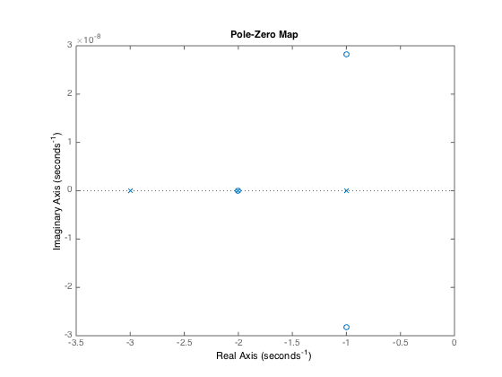
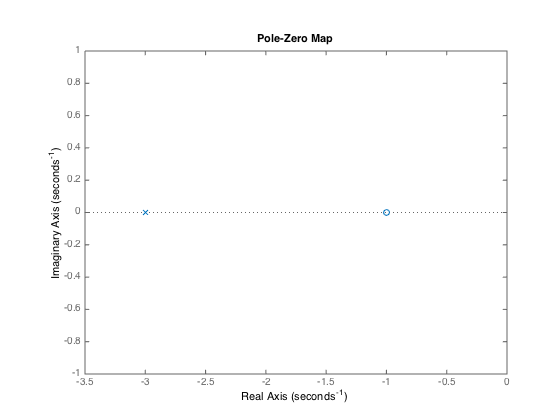

1.P2.26
對於M： $$M\ddot{x} + b(\dot{x} - \dot{y}) + k(x - y) = F$$ 對於m $$m\ddot{y} - b(\dot{x} - \dot{y}) - k(x - y) = 0$$ 一起取Laplace： $$Ms^{2}X + bsX - bsY + kX - kY = F(s)$$ $$ms^{2}Y - bsX + bsY - kX + kY = 0$$ 稍微整理： $$[Ms^{2} + bs + k]X - [bs + k]Y = F(s)$$ $$ - [bs + k]X + [ms^{2} - bs + k]Y= 0$$ 解Y, 得： $$Y(s) = \frac {F(s)[bs + k]} {Ms^{2} + bs + k][ms^{2} - bs + k] - [bs + k]^{2}}$$ 故Transfer Function為： $$\frac {Y(s)}{F(s)} = \frac {bs + k} {[Ms^{2} + bs + k][ms^{2} - bs + k] - (bs + k)^{2}}$$
2.P2.31
(用Mason's Rule)
(用手寫在後面)
3.P2.34
對於車體：\(m_{1}\) $$m_{1}\ddot{y}_{1} + b(\dot{y}_{1} - \dot{y}_{2}) + k_{1}(y_{1} - y_{2}) = - m_{1}g$$ 做Laplace： $$m_{1}s^{2}Y_{1} + bsY_{1} - bsY_{2} + k_{1}Y_{1} - k_{1}Y_{2} = - \frac {m_{1}g}{s}$$ 化簡得： $$[m_{1}s^{2} + bs + k_{1}]Y_{1} - (bs + k_{1})Y_{2} = - \frac {m_{1}g}{s}$$ 對於車輪： $$m_{2}\ddot{y}_{2} + b(\dot{y}_{2} - \dot{y}_{1}) + k_{1}(y_{2} - y_{1}) + k_{2}(y_{2} - x) = - m_{2}g$$ 化簡得： $$ - (bs + k_{1})Y_{1} + [m_{2}s^{2} + bs + (k_{1} + k_{2})]Y_{2} = \frac {-m_{2}g}{s} + k_{2}X$$ 因此兩條算式為： $$[m_{1}s^{2} + bs + k_{1}]Y_{1} - (bs + k_{1})Y_{2} = - \frac {m_{1}g}{s}$$ $$ - (bs + k_{1})Y_{1} + [m_{2}s^{2} + bs + (k_{1} + k_{2})]Y_{2} = \frac {-m_{2}g}{s} + k_{2}X$$ 利用克拉瑪公式： $$\Delta = [m_{1}s^{2} + bs + k_{1}][m_{2}s^{2} + bs + (k_{1} + k_{2})] - (bs + k_{1})^{2}$$ $$\Delta_{Y_{1}} = - \frac {m_{1}g}{s}[m_{2}s^{2} + bs + (k_{1} + k_{2})] - (bs + k_{1})[\frac {-m_{2}g}{s} + k_{2}X]$$ 故： $$Y_{1} = \frac {\Delta_{Y_{1}}}{\Delta} = \frac { - \frac {m_{1}g}{s}[m_{2}s^{2} + bs + (k_{1} + k_{2})] - (bs + k_{1})[\frac {-m_{2}g}{s} + k_{2}X]} {[m_{1}s^{2} + bs + k_{1}][m_{2}s^{2} + bs + (k_{1} + k_{2})] - (bs + k_{1})^{2}} $$ 然後發現這樣一定做不出來啊～一定是題目出錯了。那我們就用錯的做法試試看好了。假設重力被忽略： $$[m_{1}s^{2} + bs + k_{1}]Y_{1} - (bs + k_{1})Y_{2} = 0$$ $$ - (bs + k_{1})Y_{1} + [m_{2}s^{2} + bs + (k_{1} + k_{2})]Y_{2} = k_{2}X$$ 根據克拉瑪公式： $$\Delta = [m_{1}s^{2} + bs + k_{1}][m_{2}s^{2} + bs + (k_{1} + k_{2})] - (bs + k_{1})^{2}$$ $$\Delta_{Y_{1}} = (bs + k_{1})k_{2}X$$ 因此： $$Y_{1} = \frac {\Delta_{Y_{1}}}{\Delta} ＝ \frac {(bs + k_{1})k_{2}X}{[m_{1}s^{2} + bs + k_{1}][m_{2}s^{2} + bs + (k_{1} + k_{2})] - (bs + k_{1})^{2}}$$ 故Trandfer Function為： $$\frac {Y_{1}}{X} = \frac {(bs + k_{1})k_{2}}{[m_{1}s^{2} + bs + k_{1}][m_{2}s^{2} + bs + (k_{1} + k_{2})] - (bs + k_{1})^{2}}$$ 哇～這樣就算出答案了～為了算出答案，就算是忽略重力也是沒有關係的。
4.P2.44
首先，他說這是個圓柱，半徑r, 厚度L, 要求\(J_{L}\)。跟普物有85％像： $$ J_{L} = \int_{0}^{r} r'^{2} \cdot (2 \pi r' L dr')\rho = 2 \pi \rho L \int_{0}^{r} r'^{3}dr' = \frac {\pi \rho L r^{4}}{2}$$ 接著要求\(T_{L}\)。不過題目給的不清不楚，要用什麼表示也不知道，真是很掃興。那就假設用外面看得到的，負載的角速度\(w_{L}\)吧。首先是: $$T_{L} = J_{L} \alpha_{L} = \frac {\pi \rho L r^{4}}{2} \dot{w}_{L}$$ $$F_{edge} = \frac {T_{L}}{R_{1}} = \frac {\pi \rho L r^{4}}{2R_{1}} \dot{w}_{L}$$ 這樣就求出作用在齒輪邊緣的力，也可求得齒輪組1對2的力矩。在motor的運作中，除了要讓自身轉動，還要克服1給2的力矩(簡單化一下力圖也看得出來)。因此可求得： $$F_{edge} \cdot R_{2} + J_{m} \dot{w}_{M} = T$$ 帶入剛剛計算出的東西： $$\frac {\pi \rho L r^{4}}{2} \dot{w}_{L} \frac {R_{2}}{R_{1}} + J_{m} \dot {w}_{M} = T$$ 接下來利用Gear Ratio的關係，結果發現她沒有給n，也不知道是不是能用這個符號。算了，直接用N好了： $$w_{L}N_{1} = w_{M}N_{2} \Rightarrow w_{M} = \frac {N_{1}}{N_{2}} w_{L}$$ 以及 $$\frac {R_{1}}{R_{2}} = \frac {N_{1}}{N_{2}}$$ 因此 $$T = \frac {\pi \rho L r^{4}}{2} \dot{w}_{L} \frac {N_{2}}{N_{1}} + J_{m}\frac {N_{1}}{N_{2}} \dot{w_{L}}$$
5.P2.46
(覺得整份作業都在瘋狂解Laplace) 列出系統的governing equation： $$F + b_{1}sX_{2} - b_{1}sX{1} + k_{1}X_{2} - k_{1}X{1} = m_{v}s^{2}X_{1} $$ $$[m_{v}s^{2} + b_{1}s + k_{1}]X_{1} - [b_{1}s + k_{1}]X_{2} = F$$ 及： $$b_{1}sX_{1} - b_{1}sX{2} + k_{1}X_{1} - k_{1}X{2} + b_{2}sX_{2} + k_{2}X_{2} = m_{1}s^{2}X_{2}$$ $$[b_{1}s + k_{1}]X_{1} + [m_{1}s^{2} + (b_{2} -b_{1})s + (k_{2} - k_{1} )]X_{2} = 0$$ 解聯立得： $$X_{1} = \frac { F [m_{1}s^{2} + (b_{2} -b_{1})s + (k_{2} - k_{1} )]} {[m_{v}s^{2} + b_{1}s + k_{1}][m_{1}s^{2} + (b_{2} -b_{1})s + (k_{2} - k_{1} )] + (b_{1}s + k_{1})^{2} } $$ 因此Transfer Function為: $$\frac {X_{1}}{F(s)} = \frac { [m_{1}s^{2} + (b_{2} -b_{1})s + (k_{2} - k_{1} )]} {[m_{v}s^{2} + b_{1}s + k_{1}][m_{1}s^{2} + (b_{2} -b_{1})s + (k_{2} - k_{1} )] + (b_{1}s + k_{1})^{2} }$$
6.CP2.9
Code長這樣：
G = tf([1, 1], [1, 2])
H = tf(1, [1, 1])
%close loop function goes here:
sys = G / (1 + G * H)
%plot pole-zero plot:
pzmap(sys)
然後他會說Transfer Function長這樣：
sys =
s^3 + 4 s^2 + 5 s + 2
----------------------
s^3 + 6 s^2 + 11 s + 6
稍微畫一下圖：
可以發現在\(s = -2\)有一個pole-zero cancelation。把它消掉：
%cancel pole and zero
sys = minreal(sys)
%and print the result
pzmap(sys)
圖長這樣：
他會說Transfer Function長這樣：
sys =
s + 1
-----
s + 3
注意pole-zero cancelation是一件很重要的事，因為他有可能會讓人誤判系統穩定性。比如說：
$$H(s) = \frac {s - 1}{(s - 1)(s + 2)}$$
如果把它做 poke-zero cancelation，會得到：
$$H(s) = \frac {1} {s + 2}$$
所有pole都在左半邊，看起來很穩定。但是這會有一個bug：Transfer Function都是在zero initial condition狀況下考量的。如果今天initial condition不是0，回到原來的DE看： $$y'' + y' - 2 = u' - u $$ $$s^2Y + sY - 2Y - y(0)(s + 1) - y'(0) = sU - U - u(0)$$ 做一些移項。注意右半邊有關initial conidition的項： $$Y = \frac {s - 1}{s^{2} + s - 2}U + \frac {s + 1}{s^{2} + s - 2}y(0) + \frac {y'(0) + u(0)}{s^{2} + s - 2}$$ 可以發現最右邊的 \(\frac {y'(0) + u(0)}{s^{2} + s - 2} = \frac {y'(0) + u(0)}{(s + 2)(s - 1)}\)，只要initial condition不是0，就會爆掉。這是pole-zero cancelation時會發生的悲劇。 探究其原因，可以發現是在不合時宜的地方砍掉了右半邊成對的pole-zero產生的悲劇。
Bonus 1
時間長樹常數的定義：假定有一個霧了鍊的變化模型是：
$$A = A(0)e^{-at}$$ 那麼\(\frac {1}{a}\)就是這個系統的時間常數。 時間常數大致表示「量衰變成\(\frac {1} {e}\)需要花的時間」。跟pole的關係其實也很明顯。比如有一個系統長這樣： $$H(s) = \frac {1} {s + a}, a > 0$$ 那麼輸出的Laplace Trancefom就會有\(e^{at}\)這個mode，而這個mode消散的速度，就會跟a有關，而-a剛好是這個系統的pole。 可以說Pole越往右，時間常數就越小，而系統之中，該pole表示的mode就會消褪得越快。